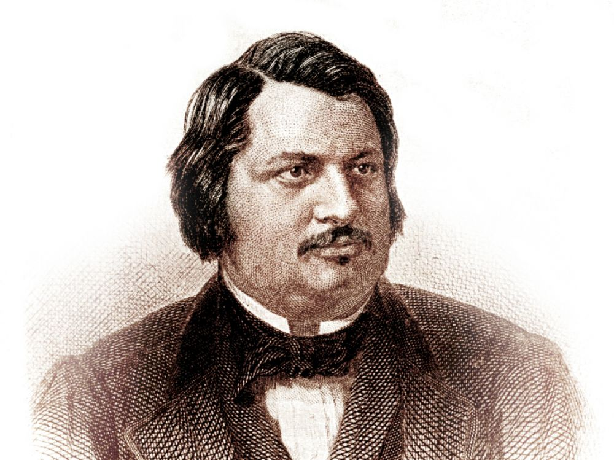

HONORE-DE-BALZAC

.Honoré de Balzac [1799-1850]
Một ý tưởng phi thường
Một buổi chiều vào năm 1833, một con người có phần dung tục, dữ dằn, nợ nần chồng chất, một năng lượng bất kham, mang đầy những dự định lạnh lùng, người đã viết ra dưới nhiều ngòi bút danh khác nhau một số thiên truyện mùi mẫn hay đen ngòm xem ra không đến nỗi xoàng, đã thốt ra nói với cô em gái Laure một câu xanh rờn: “Anh tìm thấy một ý tưởng phi thường: Trở thành một thiên tài”.
Con người đó là Honoré de Balzac [1799-1850]. Và cái mà ông cho là “ý tưởng phi thường” là gì? Đấy là sự trở lại của các nhân vật. Homère, Dante, Rabelais, Cervantès đã viết ra những tác phẩm đồ sộ về bao nhiêu nhân vật mà từ Ulysse đến Gargantua, từ Télémaque và từ con chó Argos đến Don Quichotte và Sancho Panca đã trở nên quen thuộc với chúng ta. Ngay lập tức, Balzac tự xác lập mình trong hàng ngũ danh tiếng đó, bước vào những lâu đài của những vĩ nhân, với một dấu ấn riêng. Công phu tìm tòi của ông chính là đưa các các nhân vật ấy quay lại trong những cuốn tiểu thuyết riêng rẽ.
Sự đa dạng của thế giới hiện đại được thể hiện dưới những góc độ khác nhau trong những thiên khác nhau của Tấn trò đời (La Comédie humaine). Balzac đã từng viết: “Chẳng có cái gì là nguyên khối trong thế giới này, ở đấy tất cả là một bức tranh khảm”. Thế nhưng qua bức tranh khảm đó có những sợi chỉ xuyên suốt của những nhân vật tái xuất hiện. Chẳng hạn Rastignac, (một trong những nhân vật nổi tiếng của Balzac, kẻ đã trở thành sự hiện thân cho chủ nghĩa hãnh tiến giống như Don Juan hiện thân cho sự quyến rũ, hay như Faust, hình ảnh của sự ham mê hiểu biết) nhân vật này đã xuất hiện trong Cô con gái của Eva (Une fille d’Eve), rồi trong Lão Goriot (Le père Goriot), rồi trong Ngôi nhà Nucingen (La maison Nucingen) và cả trong Những huy hoàng và khốn khổ của kiếp kỹ nữ (Splendeurs et Misères des courtisanes). Thế giới của Balzac là một thế giới bùng nổ bởi sự khác biệt của các giai tầng xã hội, việc phân công lao động, sự tiến bộ kỹ thuật – và được tập hợp lại bởi sự trở lại của các nhân vật.
Balzac đã 30 tuổi khi bắt tay vào viết Tấn trò đời. Sau khi tác phẩm được xuất bản – trong vòng 20 năm trời, khoảng 80 cuốn sách mà phần lớn là những tuyệt tác – ông qua đời khi 51 tuổi, kiệt quệ đến tận cùng. Ông đã có thời gian để thực hiện giấc mơ của mình với việc lấy bá tước phu nhân Hanska, một người Ba Lan có phần mãnh liệt mà ông đã thư qua từ lại suốt 18 năm trời. Và với việc tạo ra mọi cảnh đời trong thế giới hư cấu ông đã nhân đôi thế giới thực tại lên.
Đấy là một con người lao động tuyệt vời, một tiều phu, một tên tù khổ sai của chữ nghĩa. Ông ngồi đấy, trong bộ đồ ngủ, cốc cà phê để trước mặt, vào giữa đêm đen, tại chiếc bàn, và cung cấp một trong những hình ảnh mãnh liệt nhất về cái huyền thoại khổ sở và huy hoàng của văn chương. Bên cạnh Homère và Milton bị mù lòa, cạnh một Corneille tủi nhục trước vinh quang của Racine, ông nằm trong số những con người khốn khổ và vinh quang của sáng tạo văn học.
Balzac - vị thánh ba ngôi
Balssa, chính là tên của bố ông. Sở dĩ ông đổi tên là vì nỗi tủi nhục kinh hoàng trong gia tộc: Một người bị án tử hình. Honoré, “người được tôn vinh lớn lao”, ban đầu là một kẻ ô danh, do tai tiếng của gia tộc. Và cái chữ ký của nhà viết tiểu thuyết Pháp nổi tiếng bậc nhất thế giới, bởi thế, đã chịu thiên kiến trong xương tủy từ đời người cha. Cha ông, phất lên từ thời Cách mạng Pháp bằng việc buôn lậu, lấy một cái tên quý tộc “de Balzac” từ một tỳ thiếp của vua Henri VI. Những tác phẩm của con ông đậm dấu ấn tù ngục, danh dự, gia đình, chất quý phái và những điều bí mật.
Balzac hẳn sẽ trở thành một gã tâm thần, dị hợm, nếu ông không tìm đường đến nghề văn vì sự dữ dằn của mình; cái nhìn sắc sảo đầy thông minh, do những sự tinh tế của một kẻ hát rong và sự khao khát tình yêu, sẽ biến ông trở thành một con người phóng đãng trong sắc dục. Ông đã từng bị đuổi khỏi trường trung học vì tội phỉ báng cây thánh giá. Nhưng ông đã chế ngự được hệ thần kinh dễ kích động, nhập nó vào những tài năng thiên phú của mình để tạo nên một thôi thúc sáng tạo. Như vậy ông trở thành Balzac, vẽ ra những búc tranh phổ quát nhất về con người mà sau này chính Freud phát hiện ra.
Balzac đã là một vị thánh ba ngôi: Tình dục, đồng tiền và quyền lực. Chúng bao giờ cũng đắc thắng và vì thế người ta thích thú ông. Đứng trên góc độ phê phán, ngòi bút ông nói về những tội lỗi, những thói xấu, những bông hoa ác và sự nổi loạn. Chất liệu thường xuyên cho các tác phẩm của ông là cuộc sống phong phú và phức tạp của xã hội dân sự, sự dâng trào của những say mê và ám ảnh.
Cứ tùy tiện nhặt ra những thí dụ: Huân tước Dudley, đã mang về những người Ấn Độ, “một thứ khác cạnh hương liệu”, cái khẩu vị về cơ thể đàn ông, ông ta chính là cha một cô gái yêu đám con gái và một đứa con trai đỏng đảnh từ những tình yêu vụng trộm, con “sư tử” De Marsay, một tên ma cô chính hiệu. Đến lượt mình, cô Dudley luyến ái đồng tính nữ này bị cướp đi người tình nhân, “cô gái có cặp mắt vàng” bởi người anh em cùng cha khác mẹ. Điên lên vì ghen, Dudley giết chết người đẹp. Người ta có thể tìm thấy chuỗi dài những tiếng gào thét tuyệt vọng về tình dục đậm chất Balzac đó trong các tác phẩm khác. Đấy là một sự thác loạn tinh thần. Khi viết, ông giống như kẻ lên đồng và trở thành một Chúa Trời. Một sức mạnh siêu nhân được ông đưa vào trong hình hài con người, dưới những lớp da khác nhau, với con số 2472 nhân vật trong Tấn trò đời.
Nhưng khi ông trở lại trong cái vỏ của mình, khi không còn xuất thần, ông chỉ là một con người như bao con người khác, cũng xoay xở tháo vát, làm đủ mọi nghề, dan díu với nhiều phụ nữ, say sưa, nghiện cà phê như một thứ ma túy. Một con người ham sống điên cuồng nhưng lại biết tự kiểm soát đến tối đa khi cầm bút. Viết thì hăm hở đến vô độ, nhưng chữa lại những trang viết như một thứ khổ hình. Khi bạn đọc một trang văn của ông, bạn sẽ bảo rằng ông đã chữa đến 14 lần, mà đấy là tính trung bình. Có lúc ông chữa đi chữa lại đến 30 lần!
Nói về Balzac ư? Người ta không phải là vĩ nhân từ khi sinh ra, mà chỉ trở thành vĩ nhân thôi. Vĩ đại là sự nghiệp. Hơn nữa đối với ông cảm hứng không phải là từ trên trời rơi xuống, mà từ bên trong, là việc ngấu nghiến và say sưa hấp thụ thực tại và biến nó thành siêu thực.
Ông là Cervantès của nước Pháp, là Tolstoi của nước Pháp. Đấy là nhà quan sát cuộc sống xã hội mà, theo một công thức không ngừng lặp lại, không những ganh đua với nhà nước dân sự mà cả với Chúa Trời. Trên hết, đấy là một nhà thơ. Sức tưởng tượng cuốn ông đi và ông để lại cho chúng ta một Bảo tàng không thể quên gồm những kẻ tội đồ, những gái giang hồ, những kỹ nữ, những kẻ hãnh tiến, những cặp yêu đương, những chính khách và những ký giả còn thực hơn cả ngoài đời và sinh ra từ đầu óc của ông. Sự phân biệt giữa thực tế và tưởng tượng đã bị thiên tài của Balzac xóa đi. Honoré de Balzac hay là sự ham sống điên cuồng: Ông có đến mười cuộc đời, kẻ chạy theo tiền tài và danh vọng, đi ngao du, kẻ sưu tập những cuộc chinh phục đàn bà và tung Standhal lên văn đàn.
Sinh ra cách đây 200 năm, tác giả Tấn trò đời vẫn là nhà sáng tạo kỳ diệu bậc nhất của văn học Pháp: Hơn 80 tác phẩm viết ra trong vòng 20 năm! Một thế giới mang trong lòng nó một sân khấu sống động với gần 2500 nhân vật, trong đó nhiều nhân vật đã trở thành huyền thoại: Rastignac, lão Goriot… Ông miêu tả một xã hội của những tham vọng và những thất bại, những con người giống với thế giới thật của chúng ta một cách lạ lùng.
Balzac mãi mãi là một tượng đài không hề mang một nếp nhăn.